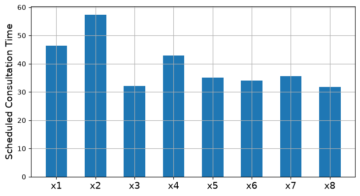

Medical Appointment Scheduling under Cross Moment Ambiguity#
We consider a medical appointment scheduling problem described in [BSZ19], where \(N\) patients arrive at their stipulated schedule and may have to wait in a queue to be served by a physician. The patients' consultation times, denoted by \(\tilde{\pmb{z}}\in\mathbb{R}^N\), are uncertain and their arrival schedules in terms the assigned consultation lengths \(\pmb{x}\in\mathbb{R}^N\) must be determined at the first stage. A distributionally robust optimization model presented below is used to minimize the worst-case expected total cost of patient's waiting and physician's overtime,
where the second-stage decision \(y_j\) denotes the waiting time of patient \(j\), with \(j\in[N]\) and \(y_{N+1}\) represents the overtime of the physician. The ambiguity set \(\mathcal{F}\) is formulated below for capturing cross moment information,
with the support \(\mathcal{Z}\) defined as
According to [BSZ19], parameters of the model are specified as:
\(N=8\) as the number of patients;
\(c=2.0\) as the unit cost of physician overtime;
\(\pmb{\mu}=\mathbb{R}^N\) as the mean consultation time of all patients, each \(\mu_i\) is randomly generated uniformly over \([30,~60]\);
\(\pmb{\sigma}\in\mathbb{R}^N\) as the standard deviations of the consultation times, each \(\sigma_i=\mu_j\epsilon_j\) with \(\epsilon_j\) randomly generated uniformly over \([0,~0.3]\);
\(T\) as the regular working hours of the physician, expressed as \(T=\sum_{i=1}^N\mu_i + 0.5\sqrt{\sum_{i=1}^N\sigma_i^2}\);
Covariance matrix \(\pmb{\Sigma}\) of the random consultation time, with each element to be
import numpy as np
np.random.seed(1)
N = 8
c = 2
mu = 30 + 30*np.random.rand(N)
sigma = mu * 0.3*np.random.rand(1, N)
T = mu.sum() + 0.5*((sigma**2).sum())**0.5
mul = np.diag(np.ones(N))*(1-0.25) + np.ones((N, N))*0.25
Sigma = (sigma.T @ sigma) * mul
In the distributionally robust model, each wait-and-see decision \(y_j(\pmb{z}, \pmb{u})\) is defined to follow the affine decision rule \(\overline{\mathcal{A}}\left(\{\{1\}\}, [2N+1]\right)\), which implies that each \(y_j\) affinely depends on random variables \(\pmb{z}\in\mathbb{R}^N\) and \(\pmb{u}\in\mathbb{R}^{N+1}\). The corresponding RSOME model is implemented and solved as follows.
from rsome import dro
from rsome import E
import rsome as rso
model = dro.Model()
z = model.rvar(N)
u = model.rvar(N+1)
fset = model.ambiguity()
fset.suppset(z >= 0,
rso.square(z - mu) <= u[:-1],
rso.square((z-mu).sum()) <= u[-1])
fset.exptset(E(z) == mu, E(u)[:-1] <= sigma**2,
E(u)[-1] <= Sigma.sum())
x = model.dvar(N)
y = model.dvar(N+1)
y.adapt(z)
y.adapt(u)
model.minsup(E(y[:-1].sum() + c*y[-1]), forall=fset)
model.st(y[1:] - y[:-1] + x >= z, y >= 0)
model.st(x.sum() <= T, x >= 0)
model.solve()
Being solved by ECOS 2.0.14...
Solution status: Optimal solution found
Running time: 0.0485s
The optimal objective value is shown below.
print(f'Objective: {model.get():.4f}')
Objective: 91.3042
We can also retrieve the optimal solution through calling x.get() and visualize the results.
import pandas as pd
import matplotlib.pyplot as plt
plt.figure(figsize=(8.5, 4.5))
labels = [f'x{i+1}' for i in range(N)]
plt.bar(labels, x.get(), width=0.55)
plt.ylabel('Scheduled Consultation Time', fontsize=14)
plt.xticks(fontsize=14)
plt.grid()
plt.show()

Reference